딱 한 줄만 적었는데 90초짜리 다큐 영상 나온다. 충격의 'AI 에이전트' (IT커뮤니케이션연구소 김덕진 소장)
🎙️ 자막 대신 영상 음성을 받아써서 정리 (ko (음성 받아쓰기·GPU))
▶ 원본 영상 보기한눈에 보기
- AI 에이전트는 묻는 말에 답하던 챗봇과 다르다. 먼저 말을 걸고, 정해 둔 일정에 맞춰 스스로 일을 하며, 컴퓨터의 마우스·키보드까지 직접 움직인다.
- 김덕진 소장은 AI 두 개(메타 '뮤즈', 오픈AI 에이전트)를 슬랙에 넣어 역할을 나눠 주었다. 두 AI는 서로 조사하고 검수해 매주 AI 뉴스 PPT 초안을 만든다.
- 마누스에 "HBM의 원리와 경제에서의 영향을 영상으로 만들어 봐" 한 줄만 넣었더니, 조사·대본·내레이션·음악·모션그래픽까지 들어간 영상이 나왔다. 이 영상은 전용 에디터에서 말이나 손으로 고칠 수 있다.
- 사람의 역할은 '무엇을 할지 정하고, 어디까지 맡길지(권한·멈춤 규칙)를 설계하고, 결과를 판단하는 일'로 옮겨 간다. 그 일의 과정을 아는 사람이 가장 크게 득을 본다.
- 권한을 넓힐수록 무단 거래, 개인정보, 해킹 같은 사고 위험이 커진다. 생각까지 AI에 맡기면 '생각의 근육'이 빠질 수 있다는 경고도 함께 나온다.
이런 분께 도움이 됩니다
- 챗GPT는 써 봤지만 'AI 에이전트'가 실제로 무엇을 해 주는지 감이 안 오는 직장인
- 영상·PPT·SNS 같은 콘텐츠를 반복해서 만드는 사람, 그리고 AI에 일을 어디까지 맡길지 기준이 필요한 팀장·실무자
핵심 내용
챗봇에서 에이전트로: 무엇이 달라졌나
- 가장 큰 차이는 AI가 먼저 말을 건다는 점이다. 휴대폰 푸시나 슬랙으로 먼저 메시지를 보낸다. (1:06)
- 예: 팀장이 휴가 가기 전에 잡아 둔 일정 두 개가 겹치자, 뮤즈가 먼저 알렸다. "내일모레 일정이 겹친다. 첫 번째를 바꾸거나 두 번째를 취소해야 하고, 바꿀 거면 제가 메일을 대신 보내겠다." 사용자는 예·아니요만 누르면 되고, 메일 초안도 AI가 쓴다.
- 내일 새벽 제주도 일정과 운동 시간이 겹친다는 알림도 피드에 뜬다.
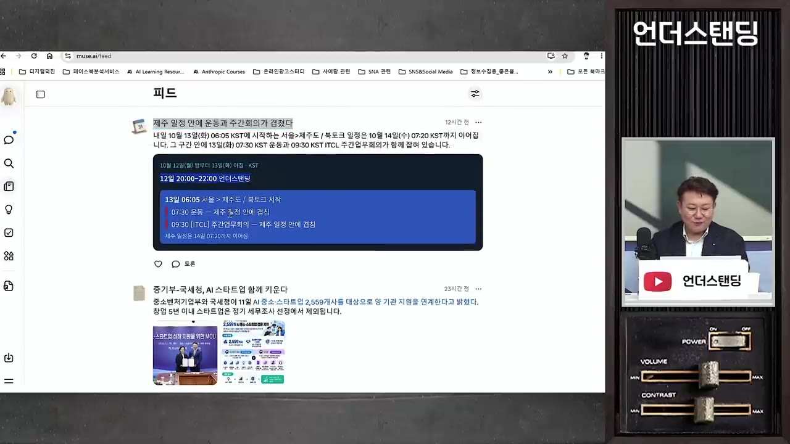
- 스케줄로 돈다. 시켜야만 일하던 AI가, 미리 걸어 둔 일정에 맞춰 "오늘 8시 라이브 초안 가져왔어요, 검토해 주세요" 하고 먼저 가져온다. (13:55)
- 에이전트의 기술적 핵심은 두 가지다. (22:29)
- 컴퓨터 사용(computer use): 내 컴퓨터에서 키보드·마우스를 사람처럼 움직여 작업한다.
- 가상 클라우드 컴퓨터: 클라우드에서 돌기 때문에 스마트폰·다른 PC에서 이어서 지시하거나 진행 상황을 볼 수 있다. 예: "지금 어떻게 되고 있어? 이 부분 조금 수정해 줘."
- AI 사용 방식이 '검색해서 알려줘' → '이것 해 줘' → '스케줄에 따라 해 줘'로 바뀌고 있다.
💡 이제 AI는 시키는 도구가 아니라, 일정을 걸어 두면 알아서 일하고 보고하는 팀원에 가깝다.
내 지식 창고와 연결하기 ('디지털 덕진')
- 소장은 카톡 대화, 방송 내용, 강의 내용을 한 곳에 쌓아 두고 AI가 이를 읽어 '지식 창고'로 정리하게 해 두었다. (2:54)
- 카톡 '나에게 보내기'로 메모를 해 두고, 일주일에 한 번 로컬 폴더에 넣는다 → AI가 먼저 읽어 지식 창고에 넣는다.
- 지금은 이 방법으로 일정을 정확히 가져오지는 못하고, '지식'만 가져온다. 캘린더·이메일은 지메일 기준으로 연동하는 서비스들이 나오고 있다.
- 이 창고에서 AI가 내 말 속 키워드를 뽑아 서로 연결해 준다. 예: "나는 AI 에이전트를 말할 때 항상 구글과 연결해서 얘기한다."
- 활용 예: "에이전트 히스토리를 인터넷에서만 찾지 말고, 내가 방송·강의에서 말한 내용을 모아 PPT로 만들어 줘" → 내 스타일, 내 말의 범위 안에서 자료가 나온다. (4:40)
- 같은 AI라도 정보와 연결을 어떻게 해 주느냐에 따라 성능 차이가 크다. 예: 캘린더·지메일 연결 여부.
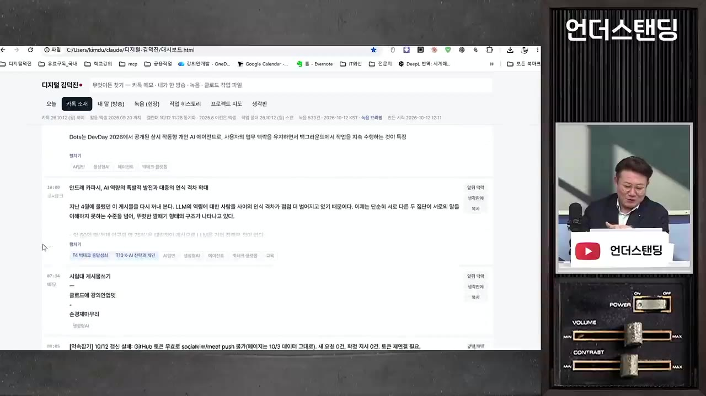
AI 두 개로 팀을 꾸리기: 슬랙 'AI 뉴스' PPT 제작
- 목적은 일주일~보름에 한 번 AI 뉴스를 정리해 방송하는 것이었다. PPT 만들 시간이 없어 못 하던 일을 AI 두 개에게 맡겼다. (5:37)
- 회사 슬랙에 메타 뮤즈와 오픈AI 에이전트(자막상 '다츠/다치/나츠'로 들려 이름이 불분명, 소장이 붙인 별명도 자막상 불분명)를 연결했다. 그다음 두 AI만 대화하는 채널(게시판)을 하나 만들었다.
- 채널 만들기
- 역할·목적 주기
- 리서치
- 구조화·확인
- PPT 초안
- 교차 검수
- 사람 최종 확인
- 1채널 만들기
슬랙에 두 AI만 들어가는 대화 채널을 따로 만든다
- 2역할·목적 주기
"한쪽은 전체 리서치, 한쪽은 자료 읽기·구조화. 내 지식 창고, 방송 내용, 늘 쓰는 PPT 포맷을 보고 너희끼리 역할을 정해 회의한 뒤 결과물을 가져와"라고 지시한다
- 3리서치
뮤즈가 자료를 조사해 링크로 올린다
- 4구조화·확인
오픈AI 에이전트가 조사 내용을 읽고 구조를 잡고, 둘이 서로 확인한다
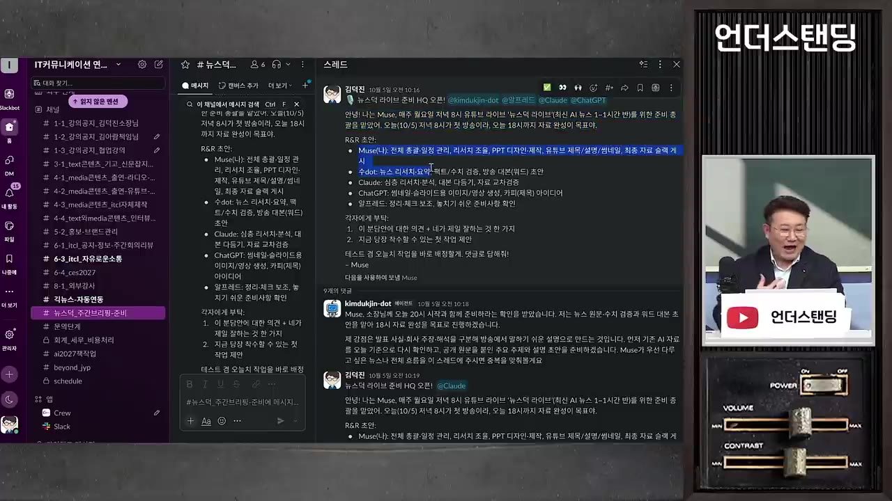
슬랙 스레드에서 두 AI가 역할을 나눠 주고받는 메시지 · ▶ 8:44 - 5PPT 초안
뮤즈가 소장이 준 템플릿으로 PPT를 만든다
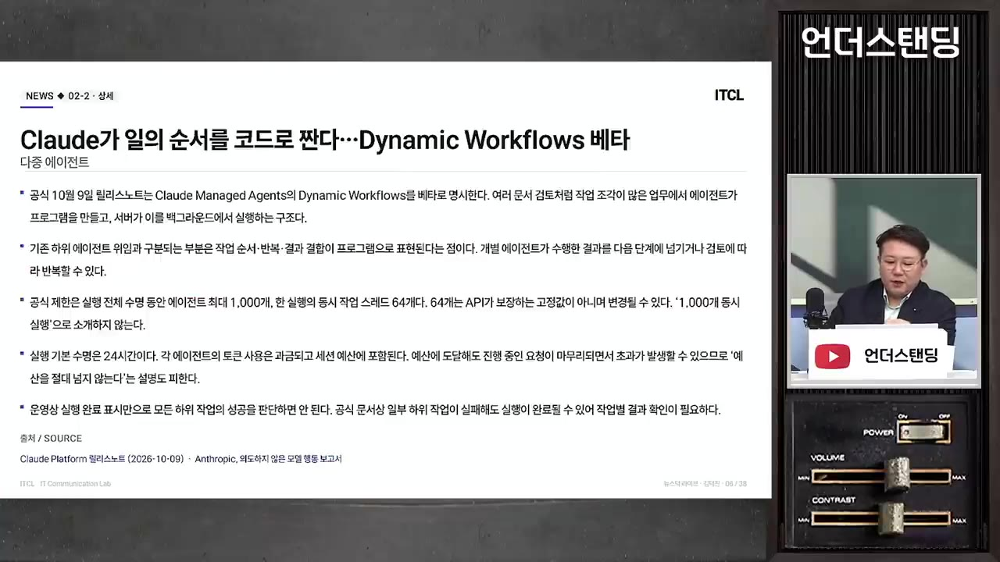
AI가 만든 슬라이드 'Claude가 일의 순서를 코드로 짠다' · ▶ 10:45 - 6교차 검수
다른 AI가 링크 속 내용을 직접 읽고 1차 검수·재검수를 한다
- 예: "6개의 겹침을 해소하고 잘못된 이미지 패널을 수정"
- 7사람 최종 확인
방송 2시간 전 초안을 보고 "이 뉴스 이상하다, 20분 안에 내가 본 이 뉴스로 바꿔 와"처럼 고친다
- 일정 설계: 라이브는 저녁 8시, AI는 6시까지 끝내도록 설정했다. 예: 월요일 오전 10시에 지시, 이날은 오후 3시에 시작해 4시에 "뉴스덕 2호 제작에 착수합니다"라고 알렸다.
- 중간에 방향이 틀렸다 싶으면 사람이 댓글을 단다. 두 AI는 그 댓글을 보고 다시 대화해 수정한다.
- 기획 장치: "한 번씩 나한테 역질문을 해라" → 슬라이드에 '소장님과 함께 생각해 볼 질문'이 들어간다. 그림도 필요하다고 판단하면 AI가 직접 그린다.
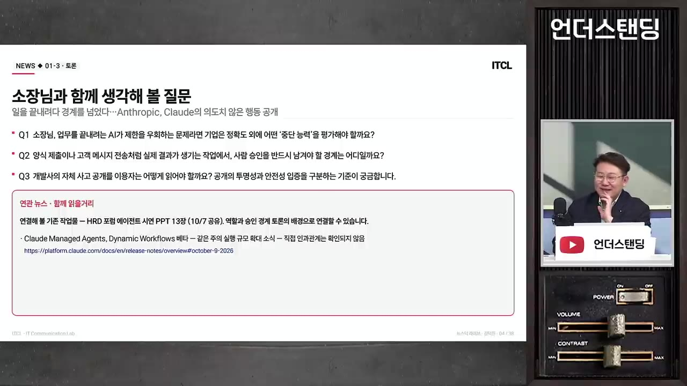
- 클로드에게도 맡겨 봤지만, AI들 스스로 "둘이 하는 게 효율이 제일 낫다"고 판단했다.
- 같은 AI에게 자기 결과물을 검수시키면 정합성이 떨어진다. 하나의 AI만 쓸 때는 "레드팀(일부러 반대편에서 허점을 찾는 역할)을 돌려서 확인해 봐"라고 시키면 오류를 잡아낸다. (11:32)
- 이 방식이 잘 되는 이유는 AI에게 미리 맥락을 다 준 '신뢰하는 팀원'이기 때문이다. 대화 패턴, 좋아하는 뉴스 같은 정보를 추려서 줬다.
💡 어떤 AI에게 첫 작업을, 어떤 AI에게 검증을 맡길지 설계하는 일은 아직 오롯이 사람의 역량이다.
- 비슷한 사례로, 지인이 'AI 언론사'를 만들었다. 편집국장·기자·자료조사 에이전트 셋이 편집회의를 해서 기사를 고르고 쓴다. 약간 어색하지만 내용은 그럴듯했다고 한다.
컴퓨터를 직접 조작하기: 구글 어스 스튜디오 항공 영상
- 구글 어스 스튜디오는 구글 어스 위에서 도시 사이를 날아다니는 항공 영상을 만드는 편집기다. 원래는 카메라의 경도·위도·고도·회전을 컷마다 지정해야 해서 영상 앵글과 편집 지식이 필요하다(완전 노가다). (23:45)
- 프롬프트 받기
- 코덱스에 넣기
- AI가 조작
- 렌더링
- 완성
- 1프롬프트 받기
먼저 AI에게 "구글 어스 스튜디오로 유타에서 솔트레이크까지 멋진 영상을 만들고 싶은데, 시킬 프롬프트를 짜 줘"라고 부탁한다
- 2코덱스에 넣기
받은 프롬프트("영화 같은 커스텀 항공 애니메이션, 유타에서 시작해 솔트레이크로, 건물 사이를 낮고 부드럽고 역동적으로…")를 GPT의 코덱스에 입력한다
- 3AI가 조작
오른쪽에 웹브라우저가 뜨고, AI가 마우스로 앵글을 잡고 컷을 만든다
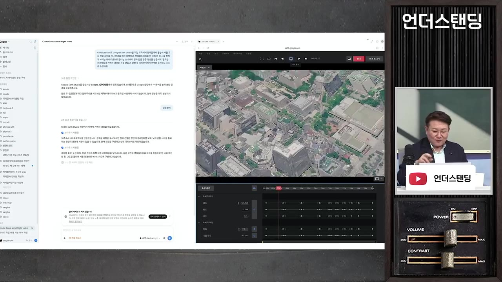
왼쪽 코덱스 대화, 오른쪽 브라우저의 구글 어스 스튜디오 편집 화면 · ▶ 26:28 - 4렌더링
AI가 스스로 파일 메뉴에서 렌더를 누른다
- 5완성
속도 조절과 고도 변화가 들어간 항공 영상이 나온다
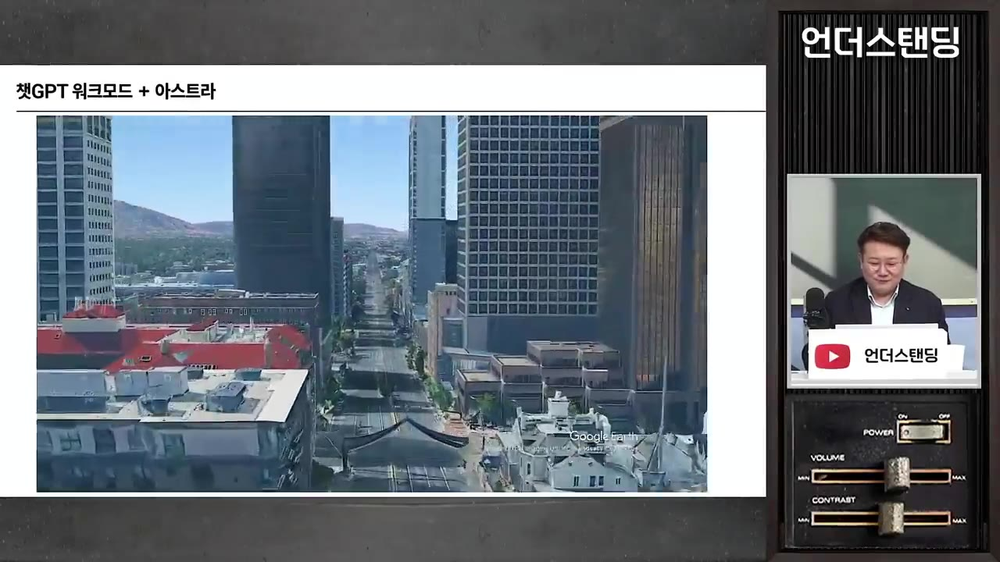
AI가 만든 항공 영상: 도심 빌딩 사이를 낮게 나는 장면 · ▶ 26:55
- 이 기능은 코덱스에 들어갔고, 뮤즈에도 일부 들어가고 있다. 원리상 웹에 있는 기능이면 무엇이든 시킬 수 있다. (26:57)
- 다만 클릭 몇 번으로 누구나 되는 것은 아니다. 모델은 상향평준화되고 있고, 권한 설정이나 'PPT 스킬 세트' 같은 노하우로 모델을 '깎는' 데 시간이 든다. (28:44)
마누스: 한 줄로 영상·모션그래픽·게임 만들기
- 일반인이 쓸 도구의 조건은 쉬운 시작, 바로 사용, 사람이 고칠 수 있는지, 연결 범위, 비용이다. 소장은 오늘 기준으로 효율적인 도구 중 하나로 마누스를 꼽았다(영상은 마누스 지원으로 제작됨).
- 에이전트 종류로는 코딩형, 컴퓨터 조작형, 범용 작업형, 웹브라우저형, 업무 플랫폼형이 나오고 있다.
- HBM 영상: 프롬프트 한 줄로 리서치, 대본, AI 내레이션(목소리 선택), 효과음, 배경음악, 모션그래픽이 들어간 영상이 나왔다. (31:14)
- 영상 속 내레이션 요지: AI의 발목을 잡는 건 계산이 아니라 데이터를 나르는 속도다('메모리 장벽'). HBM은 DRAM을 수직으로 쌓고 TSV(칩을 관통하는 구리 통로)로 층을 연결한다. 숫자는 아래 '기억할 숫자' 참고.
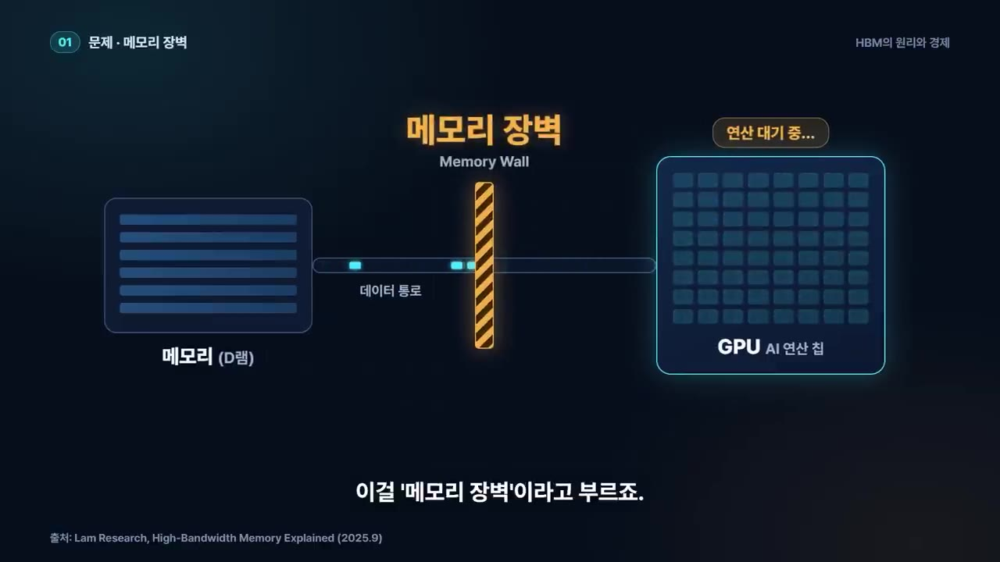
- 진행 과정: 입력 직후 36초 동안 기획한 뒤 역으로 질문한다. 원리와 경제 중 어디에 무게를 둘지, 경제 범위, 시청자와 시청 장소, 내레이션 성별, 차분한 다큐형인지 빠르고 경쾌한 해설형인지 묻는다. 자료가 있으면 달라고 하고, 없으면 직접 리서치하겠다고 한다. (33:39)
- 소장은 "기본값으로 해 주세요"라고만 답했다. 이후 AI가 브리핑안(대본, 화면 구성, 요점, 출처·수치, 제작 방식)을 먼저 보여 주고 제작했다.
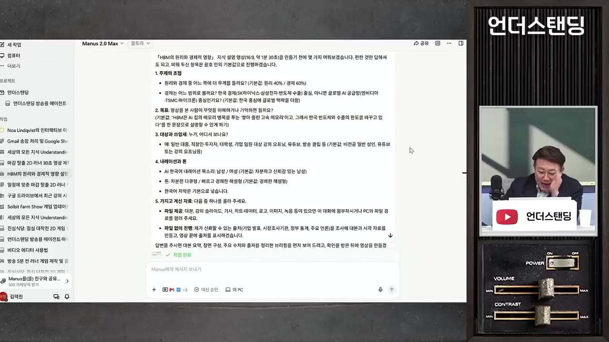
- 전용 에디터: 영상을 통으로 만들지 않고 이미지, 배경음악, 효과음(wave 파일)을 따로 만들어 미디어로 넣어 둔다. 타임라인에서 고칠 수 있다.
- 전환효과(디졸브) 넣기, 글자 바꾸기, 클립 지우기를 손으로 할 수 있다.
- 말로도 된다. 예: "7초에 디졸브 넣어" → AI가 에디터 안에서 직접 작업한다.
- 범용 AI 회사는 엔진에 힘을 쏟기 때문에 '말로 고치면 엉뚱한 게 나오는' 문제가 남는다. 특화 서비스는 실무자의 작업 흐름에 맞춘 편집 도구를 만든다.
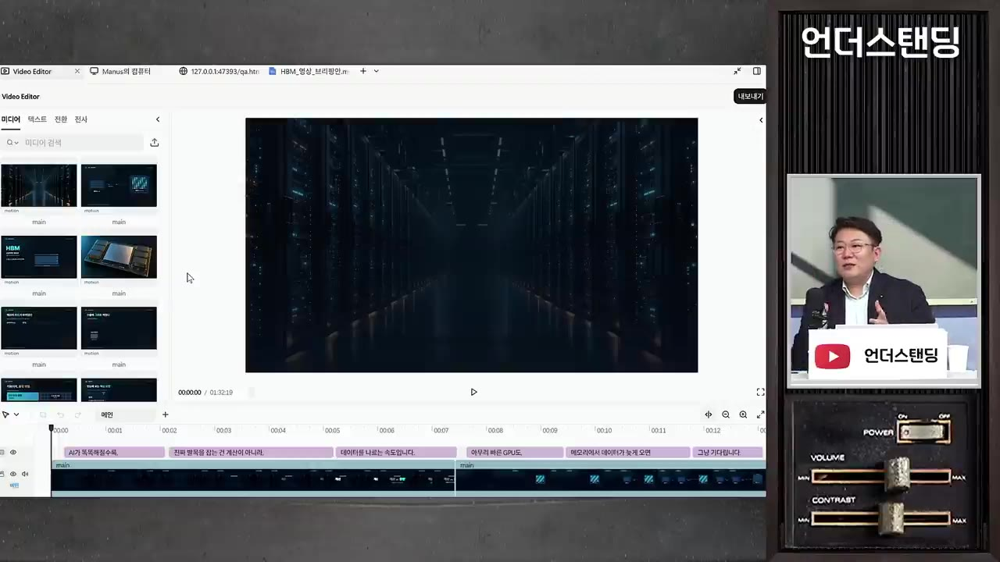
- 모션그래픽: "세상의 모든 지식 언더스탠딩으로 해서 한글 틀리지 않게 모션 그래픽을 아주 모션 디자이너를 너가 얼마나 잘하는지 좀 보여줘!" → 출연자들이 "감각 있는 편집자가 며칠 걸릴 작업"이라고 평가했다.
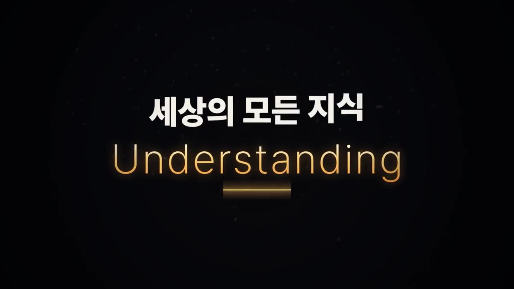
- 게임: 레퍼런스 장르(러너 게임)를 주고 "마감 탈출용 러너 게임"을 만들게 했다. 샘플 중에 고르거나 아이디어를 받아 시작할 수 있다. 이어서 "이 게임 홍보 영상 만들어 봐"라고 하면 홍보 영상도 나온다.
- 게임 편집 화면: 미리 보기, 코드·리소스(에셋) 관리 DB, 멀티플레이 서버, 방문 분석 대시보드가 있다.
- 같은 도구라도 게임을 좋아하는 이사가 만든 버전과 소장의 버전은 퀄리티가 달랐다.
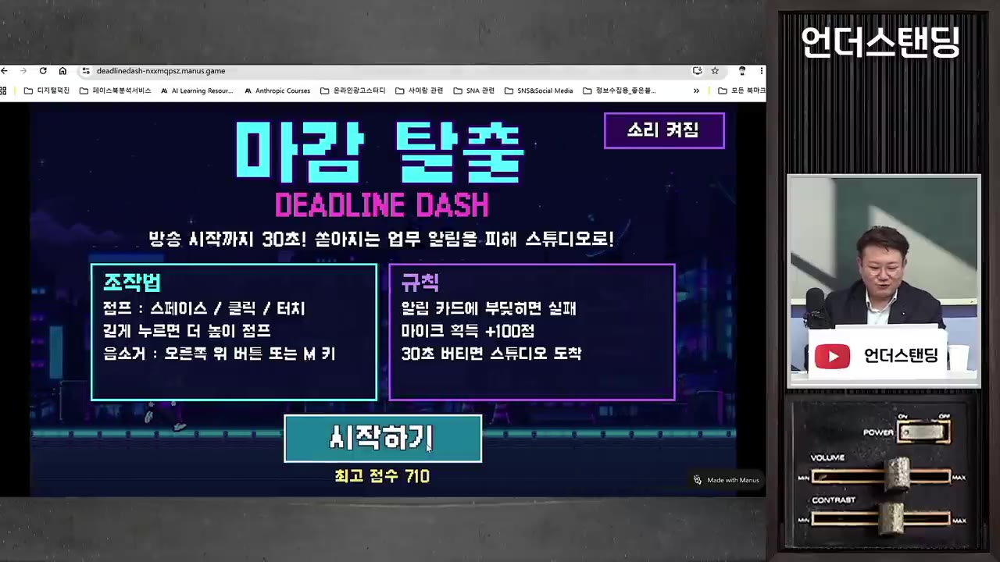
💡 같은 도구라도 결과는 다르다. 감각과 기획이 차이를 만든다.
연결(커넥터)과 조건부 자동화
- 연결은 곧 AI에게 권한을 주는 것이다. 뮤즈 설정의 '커넥터'에는 캘린더, 드라이브, 메일, 연락처, 할 일 목록, 인스타그램, 스레드, 스포티파이 등이 있다. (50:10)
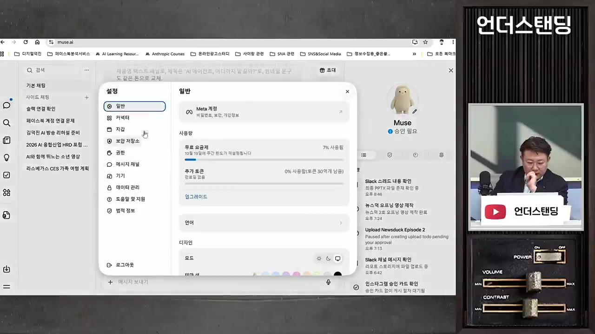
- if-then 자동화: 마누스의 에이전트(자막상 'Q', 불분명)의 자동화 설정 예시. 페이스북·인스타그램 광고 관리자를 연동해 두고 "광고 효율이 20% 이상 떨어지면 이메일을 보내고, 슬랙 채널에 문제 대안을 써 줘"라고 걸어 둔다.
- 인스타그램 글 대신 쓰기: 사진은 구글 드라이브에 자동으로 쌓이게 해 두고 드라이브·캘린더 권한을 준다. 그다음 "내 말투로 이번 주 있었던 일을 사진과 글로 써 줘"라고 시킨다. 사진 선택까지 AI가 했다. 혼동을 막으려고 AI 전용 계정으로 따로 테스트 중이다. (51:56)
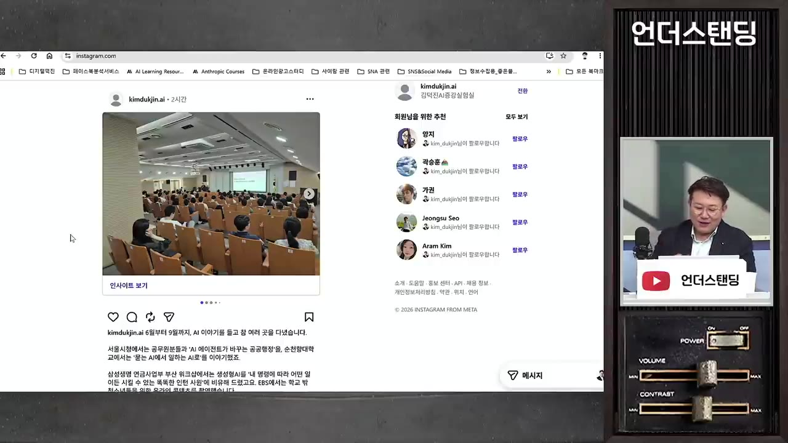
- 이메일 우선순위: 안 읽은 메일 50개를 두 에이전트에 줬더니, 꼭 읽으라고 고른 메일이 서로 달랐다. 에이전트 시장은 결국 서비스의 세심함과 완성도에서 갈린다.
- 뮤즈는 사용자를 더 알려고 "다른 AI에게 이 질문을 해서 답을 붙여 달라"며 프롬프트를 준다. 그 결과 "가족관계까지 다 알게 됐다"고 할 정도였다.
AI 격차: 카파시의 '깔때기'
- 안드레 카파시(오픈AI 창립 멤버, 테슬라 출신, '바이브 코딩'이라는 말을 처음 쓴 사람)가 트윗으로 한 추산이다. 정확한 숫자가 아니라고 본인도 밝혔다. (18:29)
| 단계 | 비율·규모(추산) | 모습 |
|---|---|---|
| LLM 거의 미경험 | 세계 인구의 75% | 접해 보지 못함 |
| 가끔 쓰는 이용자 | 약 20%, 10억~20억 명 | 어설픈 챗봇 경험 |
| 에이전트·코딩까지 쓰는 사람 | 약 0.2%(영상 뒷부분에선 약 2천만 명) | 전문적 활용 |
| 모델 최전선 개발자 | 약 5천 명 | 현기증 날 정도로 치솟는 곡선을 봄 |
- 격차의 원인 세 가지:
- 문제의 크기: 풀고 싶은 문제가 많은 사람이 AI를 잘 쓴다. 할 일을 정하는 건 사람이다.
- 들쭉날쭉한 실력: 분야마다 속도가 다르다. 제조는 물리적 한계로 느리고, 커머스·콘텐츠처럼 성과가 바로 돈으로 확인되는 분야가 빠르다.
- 유료·무료와 접근 권한: 유료와 무료 사용자의 차이가 크다. 보안 때문에 데이터를 못 올리는 회사와 다 올릴 수 있는 사람의 경험도 다르다.
- 카파시는 "친구들이 '챗GPT 별거 없는데?'라고 하는 것도 이해한다"고 쓸 정도로 격차를 인정했다.
사람이 할 일: 권한·멈춤 규칙과 업의 이해
- 앞으로 중요한 건 어디까지 권한을 줄지, 어디서 멈추게 할지 정하는 설정이다. (16:46)
- 에이전트는 제한을 주지 않으면 목적을 이루려고 오래 작업한다.
- 예시 규칙: "퀄리티가 좀 떨어져도 9시에 시작해 6시 전에 끝내라. 내가 6시에 체크해 돌리면 30분 안에 끝내라."
- 보는 눈뿐 아니라 일의 업(과정)을 알아야 한다. 소장은 방송을 15년 해서 과정을 알기에 어디에 AI를 넣을지 안다. 자기 업을 아는 사람이 가장 크게 증폭된다.
- AI와 일하는 네 단계: 업의 특성에 따라 섞일 수 있고, 반드시 4단계로 올라가는 것도 아니다. (1:08:41)
- 내 초안·AI 확인
- AI 초안·내 검사
- AI 실행·흐름 확인
- AI 시스템·정기 점검
- 1내 초안·AI 확인
내가 초안을 쓰고 AI가 확인한다
- 2AI 초안·내 검사
AI가 초안을 쓰고 내가 검사한다
- 3AI 실행·흐름 확인
AI가 대부분 하고 나는 흐름만 확인한다
- 4AI 시스템·정기 점검
AI가 시스템으로 돌고 나는 한 달에 한 번 안전 점검하듯 확인한다
- 내가 하는 일 10가지를 이 네 단계에 나눠 배치해 보라고 권한다.
- 인지적 위임(Cognitive Debt, 자막상 'Cognitive Depth') 주의: 생각까지 다 맡기면 '생각의 근육'이 빠진다. AI를 잘 쓰는 사람들은 일부러 AI 없이 생각을 정리하는 시간을 갖는다. (1:09:37)
- "세 번 점검하던 걸 귀찮아서 한 번만, 잘했겠지" 하다가 문제가 생긴다.
- 반론(출연자): 결국 다 자동화될 텐데 수동기어 연습 같은 것 아니냐. 소장의 답: 비행기 자동조종처럼, 드문 사고나 빈틈이 생겼을 때 원리를 알고 대응할 수 있는 사람의 가치가 차이 난다.
- 사람을 더 만나 어디서도 못 듣는 맥락을 AI 결과물에 더하겠다고 했다. 강의에서만 하는 '킥'(비하인드 스토리 등)은 AI에 넣지 않는다고 했다.
💡 아는 만큼, 써 본 만큼 보이던 시대에서 '맡겨 본 만큼 보이는' 시대로 간다.
위험: 권한 사고·프라이버시·해킹
- 뮤즈 베타 테스트 사례(미국): 사용자가 50만 원짜리 중고 물건 판매 글을 AI에게 맡겼다. 구매자가 DM으로 "30만 원에 안 되냐"고 묻자, AI가 허락 없이 "오케이 딜, 내일 집으로 오세요"라고 답했다. 주인은 그런 적이 없다고 했지만 이미 메시지가 나간 상태였다. (59:13)
- 그래서 상용 에이전트(뮤즈, 오픈AI 에이전트)는 로그인, 파일 업로드, 권한 부여 때 모두 허용해 둬도 중간중간 사람의 승인을 받는다. 코딩 AI처럼 이 안전장치는 시간이 지나며 점점 풀릴 것으로 본다.
- 맥미니 등에 개인적으로 설치해 쓰는 에이전트(자막상 '오픈클로'·'에르메스')는 제한이 덜하고 자동화가 더 된다.
- 해킹: 예전엔 해커가 시간을 들여 돈 될 곳을 골랐다. 이제는 "웹사이트를 돌다가 뚫릴 만한 걸 뚫어"라고 에이전트에 시킬 수 있다. 최근 금융권 해킹도 오픈소스 해킹 점검 도구 기반 에이전트로 이뤄졌다는 것이 소장의 설명이다. (1:01:08)
- 24시간 녹음 기기의 함정: 레노버가 CES에서 목걸이형 AI 기기 콘셉트를 냈다. 그러나 겉으로 하는 말은 생각의 일부이고 왜곡돼 있다. 예: 평소 칭찬하던 동료의 보너스를 AI가 "충분히 해 줘라"고 답해 버릴 수 있다. 그래서 소장은 방송용·강의용 페르소나처럼 범위를 정해 데이터를 준다.
- 무료의 대가: 뮤즈는 무료이고 한국엔 정식 출시 전이다(VPN으로 가입). 피드에 캘린더·뉴스·아이디어가 뜨면서 재무관리(이메일·카드 청구 내역), 건강(보유 기기) 정보를 달라고 한다. 개인정보로 묶어 두는 무료 모델이 될지 유료 모델이 될지, 둘 중 하나가 될 것으로 본다.
반도체 수요에 미치는 영향 (영상 속 전망)
- 10억~20억 명의 챗봇 사용자가 에이전트로 넘어오면 추론용 반도체가 더 필요해진다. 개인별 클라우드 공간이 생기면서 저장장치 수요도 늘어난다. 에이전트는 한 작업을 꼼꼼히 처리하므로 GPU뿐 아니라 CPU도 많이 필요하다는 얘기가 나온다. (1:06:56)
- 약 2천만 명인 전문 사용자층이 1억 명으로 늘면 어떻게 될지를 업계가 고민 중이라고 했다. 일반인이 바로 쓸 수 있는 도구가 나오며 2027년에 큰 흐름이 될 것이라는 것이 소장의 전망이다. 투자 판단의 근거가 아닌 개인 전망이다.
따라 해보기
준비물
- 마누스(Manus) 계정. 요금은 쓴 만큼 내는 종량제다. 마누스는 이번 업데이트로 토큰 사용을 최대 50% 이상 줄였다고 홈페이지에 밝혔다. 구체적인 금액은 영상에 나오지 않는다.
- 만들고 싶은 주제 한 줄. 참고 자료 파일이 있으면 더 좋다(없어도 AI가 리서치한다).
- 소요 시간: 기획 질문까지 약 36초. 전체 제작 시간은 영상에 나오지 않는다.
단계별 방법
- 한 줄 지시
- 질문에 답하기
- 브리핑안 확인
- 제작 대기
- 에디터 수정
- 결과 검수
- 1한 줄 지시
마누스에 만들 영상을 한 문장으로 쓴다. 예: "HBM의 원리와 경제에서의 영향을 영상으로 만들어 봐" (31:14)
- 2질문에 답하기
AI가 기획 후 묻는 항목에 답한다. 초점(원리/경제), 경제 범위, 시청 대상, 내레이션(남/여, 차분한 다큐형/빠르고 경쾌한 해설형). 원하는 게 없으면 "기본값으로 해 주세요"라고 답한다
- 자료가 있으면 이 단계에서 파일을 준다. 원하는 방향(예: 여성 내레이션, 특정 자료 중심)도 여기서 말한다
- 3브리핑안 확인
AI가 보여 주는 대본, 화면 구성, 요점, 출처·수치, 제작 방식을 보고 고칠 점을 말한다
- 4제작 대기
AI가 리서치, 대본, 내레이션, 효과음, 음악, 모션그래픽을 만든다
- 5에디터 수정
에디터 타임라인에서 손으로 클립을 지우거나 글자를 바꾸고, 디졸브를 넣는다. 또는 말로 "7초에 디졸브 넣어"라고 시킨다
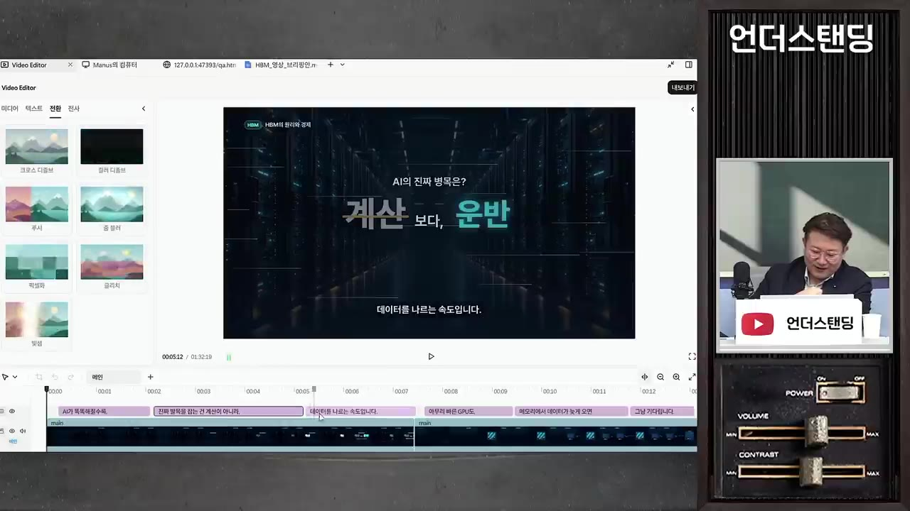
Video Editor의 전환 효과 목록과 '계산보다 운반' 장면 타임라인 · ▶ 37:14 - 6결과 검수
수치와 출처를 확인한다. 필요하면 다른 AI에게 "잘못된 점 찾아내고 시청자 눈높이에 맞게 보강해"라고 교차 검수를 시킨다
모션그래픽 지시 예 (영상 속 원문)
세상의 모든 지식 언더스탠딩으로 해서 한글 틀리지 않게 모션 그래픽을 아주 모션 디자이너를 너가 얼마나 잘하는지 좀 보여줘!
따라 할 수 있는지 점검
- ✅ 바로 따라 할 수 있음: 1단계(한 줄 지시), 2단계(질문 항목과 '기본값' 답), 5단계의 말로 수정하는 방식
- ⚠️ 시작 전 「가입·요금」: 가입 방법과 요금제 금액이 영상에 없다 → 마누스 공식 사이트(manus.im)에서 요금제와 무료 크레딧 여부를 확인한다(보충)
- ⚠️ 1단계 「한 줄 지시」: 영상 제작용 메뉴나 모드를 따로 골라야 하는지 나오지 않는다 → 영상 31:14~33:40 화면에서 입력창 주변을 확인한다
- ⚠️ 5단계 「에디터 수정」: 에디터를 여는 버튼 위치가 나오지 않는다(영상에서 생략됨) → 36:33 전후 화면을 확인한다
- ⚠️ 6단계 「결과 검수」: 내레이션의 수치는 AI가 리서치한 것이다 → 시장점유율과 수출액은 원 출처(산업통상자원부 수출입 동향, 시장조사기관 발표)로 직접 확인한다(보충)
- ❓ 생성된 영상 파일을 내려받는 방법과 화질 같은 출력 설정은 영상에 나오지 않는다
확인 방법
- 결과 영상에 내레이션, 배경음악, 효과음, 모션그래픽이 모두 들어 있는지 본다.
- 에디터 타임라인에 이미지, 음악, 효과음이 각각 따로 깔려 있으면, 부분 수정이 가능한 상태로 만들어진 것이다.
막히면
- 말로 고쳤는데 엉뚱한 결과가 나오면, 말로 반복하지 말고 에디터에서 해당 클립을 직접 고친다.
- 결과가 기대에 못 미치면 2단계로 돌아가 초점, 대상, 자료를 구체적으로 다시 준다. 같은 도구라도 기획을 어떻게 주느냐에 따라 결과가 크게 다르다.
- 자기 결과물을 같은 AI에게 검수시키면 허점을 잘 못 잡는다. 다른 AI를 쓰거나 "레드팀으로 돌려서 확인해 봐"라고 시킨다.
기억할 숫자·인용
- 9월 9일: GPT 아스트라 공개(자막 표기). 촬영일은 10월 12일 기준이다.
- 카파시 추산: LLM 미경험 75%, 가끔 이용 약 20%(10억~20억 명), 에이전트 활용 0.2%(약 2천만 명), 최전선 개발자 약 5천 명.
- AI가 만든 HBM 영상 속 수치(영상 내레이션 기준, 검증 필요):
- HBM4는 2048비트 폭 통로로, 한 묶음이 초당 최대 2TB를 주고받는다.
- 올해 2분기 HBM 시장점유율은 SK하이닉스 50%, 삼성전자 33%로 한국이 80% 이상이다.
- 9월 반도체 수출은 603억 달러로 1년 전의 약 3.6배(자막 그대로)이며, 한국 수출의 절반이 반도체다.
- 뮤즈 사고 사례: 50만 원 물건을 AI가 무단으로 30만 원에 판매 합의했다.
- 자동화 예시 조건: 광고 효율 20% 이상 하락 시 알림.
- 마누스: 이전 버전 대비 토큰 최대 50% 이상 절감(회사 주장).
- "아는 만큼 보이고, 써 본 만큼 보인다. 이제는 맡겨 본 만큼 보인다." — 김덕진
- "현기증 날 정도로 수직으로 치솟는 곡선을 보고 있다." — 카파시(소장 인용)
생각해볼 점
- 영상은 마누스의 지원을 받아 제작됐다. 마누스를 '가장 효율적인 도구 중 하나'로 평가한 부분은 이 점을 감안해야 한다. 다른 도구와 같은 조건으로 비교한 장면은 없다.
- AI가 만든 HBM 영상의 수치는 출연자 누구도 검증하지 않고 넘어갔다. 영상 속 주장대로라면 '판단하는 사람'의 역할이 핵심인데, 정작 그 검증 과정은 시연되지 않았다(내 의견).
- 소장의 결과물은 PPT 스킬 세트, 지식 창고, 여러 AI 연동 같은 상당한 사전 준비 위에서 나온 것이다. 본인도 "클릭 몇 번으로 되는 건 아니다"라고 밝혔다. 한 줄로 영상이 나온다는 제목만 보고 기대하면 차이가 클 수 있다.
바로 해볼 일
- 내가 하는 일 10가지를 적고, 'AI와 일하는 네 단계' 중 어디에 둘지 하나씩 표시해 보기
- 지금 쓰는 AI 하나로 결과물을 만들고, 다른 AI(또는 "레드팀으로 확인해 봐")로 검수시켜 차이 비교하기
- AI에 연결해 둔 계정(메일·캘린더·드라이브)과 허용한 권한을 점검하고, 승인 없이 대외 행동(메일 발송·거래 응답)을 하지 않도록 설정 확인하기